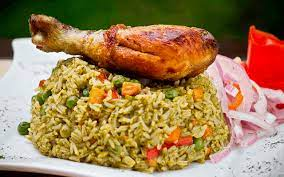

El arroz con pollo es un plato típico de América Latina y España con variaciones regionales según el pais.
1 pechuga de pollo sin piel (450 g)
1 sobre de CALDO DE GALLINA MAGGI® DESMENUZADO (9 g)
4 tazas de agua (1000 ml)
2 cucharadas de aceite (28 g)
1/2 cebolla cabezona mediana finamente picada (45 g)
2 tomates rojos finamente picados sin piel y sin semilla (245 g)
1/2 pimentón rojo finamente picado (40 g)
1 diente de ajo finamente picado (3 g)
¼ de libra de arveja (125 g)
1 zanahoria pequeña pelada y cortada en cubos pequeños (50 g)
1/2 cucharadita de SAZONADOR NATURÍSIMO MAGGI® (3 g)
½ libra de arroz (250 g)
1½ tazas de líquido de cocción de la pechuga
PASO 1: Cocina el pollo 1. Pon en una olla de fondo alto la pechuga de pollo, el sobre de CALDO DE GALLINA MAGGI® DESMENUZADO y el agua. Llévalo a fuego medio tapado por 15 minutos o hasta que la pechuga esté bien cocinada.
2. Retira del fuego, saca la pechuga y deja enfriar para desmechar. Luego, reserva el líquido donde se preparó la pechuga, ya que sirve como base para cocinar el arroz. PASO 2: Prepara el arroz
3. Vierte el aceite en una olla de fondo alto y caliéntalo a fuego medio por 3 minutos. Sofríe la cebolla cabezona, el tomate, el pimentón, el ajo, la arveja, la zanahoria y añade el SAZONADOR NATURÍSIMO MAGGI®. Mézclalo bien para integrar.
4. Agrega el arroz y la taza y media del líquido de cocción de la pechuga que se estaba reservando. PASO 3: Finaliza la receta de arroz con pollo colombiano
5. Cocina el arroz a fuego medio hasta que absorba todo el líquido, en ese momento agrega el pollo desmechado. Después debes dejarlo encima sin revolver. Baja el fuego a mínimo, tápalo y deja cocinar por 30 minutos más hasta que el arroz y los vegetales estén blanditos. PASO 4: Retira del fuego y mezcla
6. Retira del fuego el arroz cuando todo esté bien cocido, luego revuelve para mezclar el arroz con el pollo. PASO 5: Sirve el arroz con pollo
7. Sirve el arroz en porciones iguales y acompáñalo con rodajas de tomate, tiras de lechuga y trozos de aguacate. PASO 6 TIP 8. También puedes usar en esta receta, CALDO DE GALLINA MAGGI® DESMENUZADO 70% MENOS SODIO